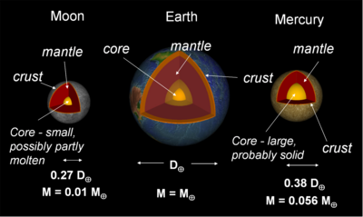
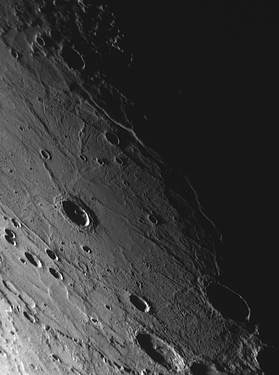

Mercury is the closest planet to the Sun with an average distance to the Sun of 5.79 × 107 km or 0.39 AU. It is an inferior planet in that its orbit is smaller than the Earths. Therefore Mercury, as viewed from Earth, never appears very far from the Sun. It’s maximum elongation (apparent separation from the Sun) is 28 degrees. It has no known satellites.
Interactive 3D Mercury globe. Drag to rotate, scroll to zoom. Texture: Solar System Scope (CC BY 4.0). Open fullscreen.
Mercury makes three rotations on its axis for every two orbits of the Sun. This is known as a 3-to-2 spin coupling and because of this the average time from sunrise to sunset on Mercury is 88 days. This helps explain the extreme temperatures on the daylight side (430 C) and nightime side (-170 C).
It is the smallest planet (diameter of 4880 km or 0.38 Earth diameter) of the four terrestrials (Mercury, Venus, Earth, Mars) and has a mass of ∼5% that of Earths. Mercury and our Moon are quite similar in many ways. Both are heavily cratered and do not have plate tectonics. However Mercury is much denser than the Moon (5.43 gm cm-3 versus 3.34 gm cm-3). It has an iron core that consists of ∼70% of its total mass (much larger than the Moon’s core) and a relatively thin silicate mantle and crust. The silicate outer shell is ∼500 km thick.
Mercury does has a very thin atmosphere (or more correctly exosphere). Processes such as vaporisation of rocks by impacts, evaporation of elements from rocks, sputtering by solar wind ions or diffusion from the planet’s interior contribute to it. Hydrogen, helium, oxygen, sodium, potassium, calcium, and magnesium have been detected. However the small total mass and very high daylight side temperatures make it impossible to keep a stable atmosphere.

Credit: Swinburne
In 1974-75 Mariner 10 was the first spacecraft to visit Mercury and it imaged ∼35% of the planet during three fly-bys. Mariner 10 confirmed that Mercury had a cratered, dormant surface, a small magnetic field (∼1% the strength of Earths) and a relatively large iron-rich core.
MESSENGER (MErcury Surface, Space ENvironment, GEochemistry, and Ranging) was launched in 2004, and completed three close fly-bys (January 2008, October 2008 and September 2009) and is expected to go into orbit around Mercury in 2011.
A movie (below) has been constructed just after MESSENGER crossed the night/day line (or terminator) during October 2008 fly-by. At the beginning of this movie, it is dawn and the Sun is just off the horizon. Long shadows are cast by crater walls and highlight variations in topography. Older, low-reflectance, and relatively blue surface features are contrasted by younger, relatively red smooth plains. Several scarps or cliffs are observed, which are places where compressional stresses caused the crust to fracture.
Credit: NASA/Johns Hopkins University Applied Physics Laboratory/Carnegie Institution of Washington
The image below shows a newly discovered large impact basin, with a diameter of ∼700 km. The basin floor has a set of radiating fractures that are like the extensional troughs seen in Pantheon Fossae (near the center of the large Caloris Basin). The neighboring terrain to the left of this image (not shown) displays a long scarp within this basin.

Credit: NASA/Johns Hopkins University Applied Physics Laboratory/Carnegie Institution of Washington
MESSENGER’s first flyby has given important information about morphologies and size-frequency distributions of impact craters. The size distribution of craters on smooth plains matches that of lunar craters postdating the Late Heavy Bombardment, implying that the plains formed no earlier than 3.8 billion years ago.